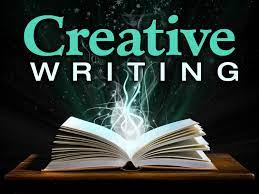

Poetry (derived from the Greek poiesis, "making"), also called verse,[note 1] is a form of literature that uses aesthetic and often rhythmic[1][2][3] qualities of language − such as phonaesthetics, sound symbolism, and metre − to evoke meanings in addition to, or in place of, a prosaic ostensible meaning. A poem is a literary composition, written by a poet, using this principle.
 Go back